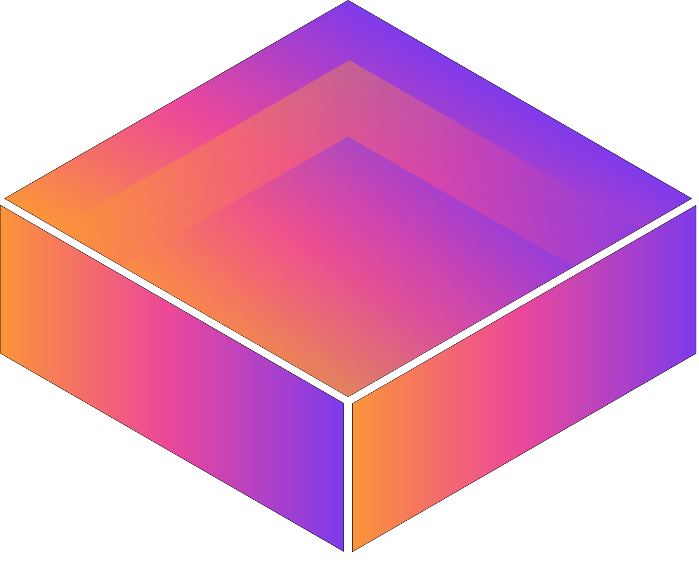
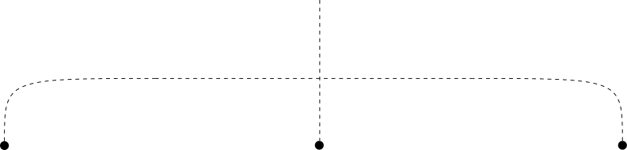

/ ˈdɛdələs / — daed · a · lus
Daedalus was the master craftsman of Greek mythology, the architect of the labyrinth, the builder of wings. Both things at once: the system that contains, and the intelligence that escapes it.
Our logo is a factory floor, viewed from above, drawn as a labyrinth.
Machines on the factory floor don't talk to each other, and the data they produce never gets used. Meanwhile one in four factory workers is near retirement, taking decades of tribal knowledge out the door. Daedalus reasons over what the whole system knows, and wearables are the cherry on top: capturing the know-how no PLC sees, and making it permanent.
Every factory AI play missed the same thing
Legacy software wasn't made for the AI era: we fix that, or integrate seamlessly with the systems that act as truth sources. Yet nothing on the floor has solved the human layer.
The worker building the product generates data that no PLC can capture: assembling the part, picking the component, running the procedure. Their hands are the most important sensor in the facility. Until now, that sensor had no interface.
Tablets and phones extended the desktop paradigm to the floor; they never replaced it. Glasses are the first interface designed for the work itself: always-on, hands-free, spatially aware, worn during assembly rather than instead of it. But we are not another glasses company. We are a spatial intelligence company, and the wearable is the instrument.
The integrations it requires (MES, WMS, SCADA, procedures) become the platform.
The data it collects becomes the world model.

Vision that runs on any device, from glasses to fixed cameras: component recognition, error detection, and procedure guidance as the work happens. Collecting the data no PLC has ever seen.
Your factory floor, modeled, simulated, and continuously improved. Our synthetic data pipeline trains AI agents roughly 10x faster, turning months of data collection into days.
MES, WMS, SCADA, ERP: all connected through a single AI bridge. One natural-language query, any system, any answer. The brain that reasons over the whole floor.
3 core technologies, one architecture, a single platform. We control the inputs that feed the model and the surfaces that deliver it: any hardware, not just glasses. Factory intelligence must be industry-specific, spatially and contextually aware. Super-specialized world models, not generic LLMs, and not specialized models built on one. Ask us why